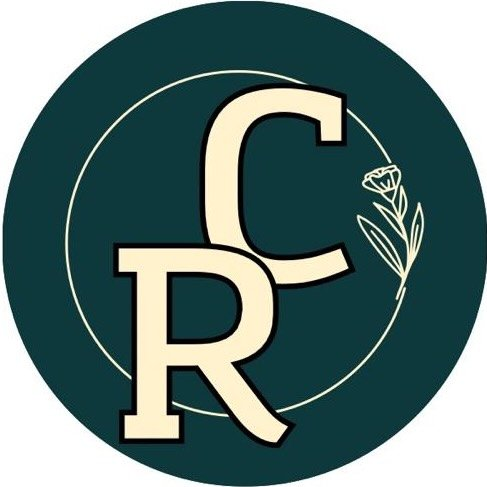
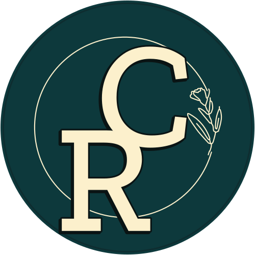
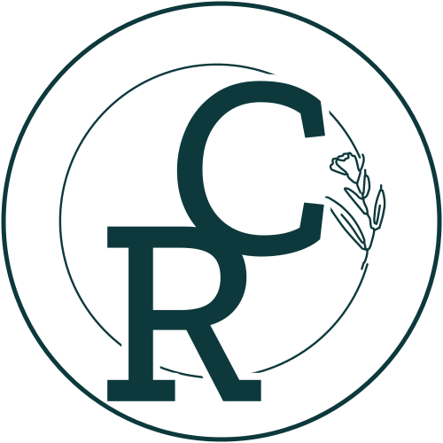
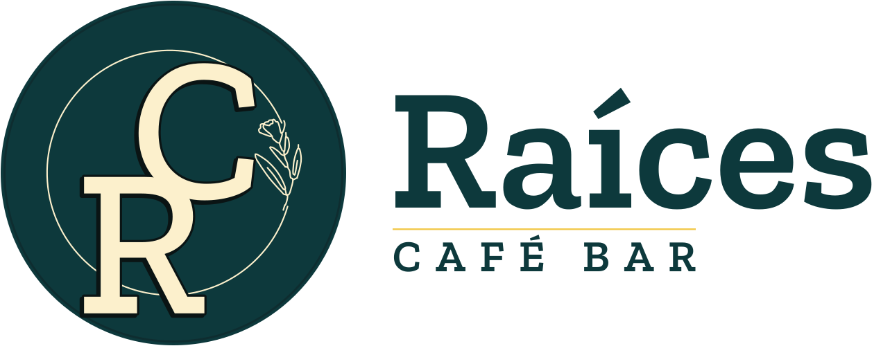
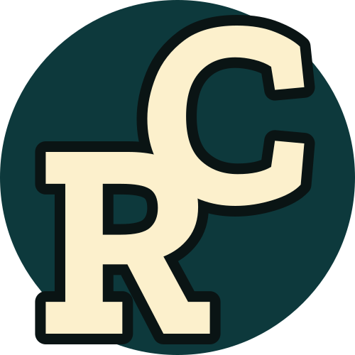

Logo de Raíces
Propuesta · a validar por el clienteRedibujo a mano del sello «RC», sin calcarlo: el disco y el aro fino se han medido sobre el original, las letras son Zilla Slab Medium (el mismo grosor de asta que el original), el perfil negro es ahora un desplazamiento constante y el ramillete se ha sacado como trazo central, para que en la web se dibuje solo.


raices-sello.svg
raices-mono.svg (toma el color del texto: currentColor)
raices-lockup.svg
favicon.svg. A 32 px se quitan el aro y el ramillete, y las letras engordan.Pendiente de confirmar
[VERIFICAR] Este mismo sello «RC» es el que usaba la cafetería Raíces de Palma de Mallorca (Instagram @raices_cafe_, hoy cerrada), que lo estrenó en marzo de 2025. Antes de usarlo, el cliente tiene que confirmar que el sello es suyo.